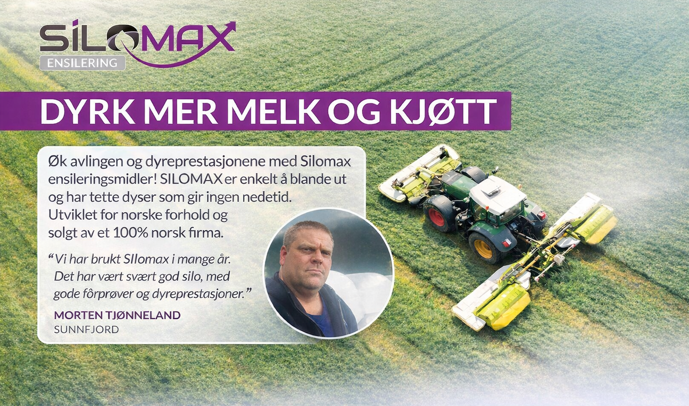
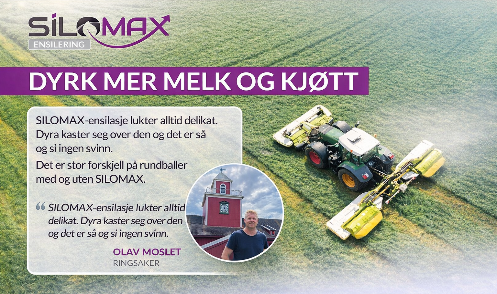
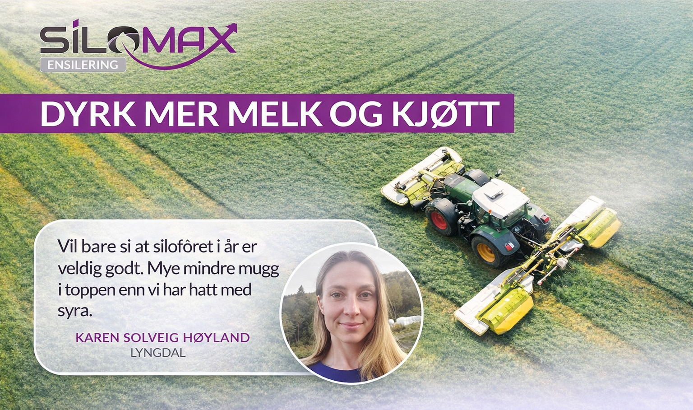

Kontrollert ensilering
Mer melk og kjøtt fra gårdens egne ressurser
Bevist pålitelig under reelle norske forhold i en årrekke. Støttet av vitenskap.
Resultater i praksis
Erfaringer fra norske gårdbrukere
Se hva bønder over hele landet opplever med Silomax IQ og STABIL


